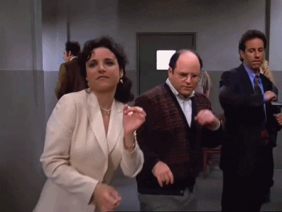
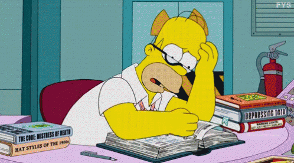
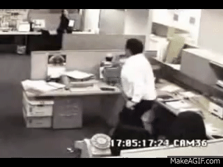

La introducción del curso de Laboratorio 2 estuvo muy interesante y enriquecedor, pudimos conocer más a fondo a nuestra profesora, su trayectoria profesional y sus habilidades como docente. También nos permitió presentarnos y conocer un poco mejor a nuestros compañeros, compartimos nuestras habilidades, hobbies y experiencias. Luego de ello nos presentó el sílabo del curso y de manera general nos explicó los temas a abarcar estas primera semanas. Tengo que admitir que me da un poco de temor y curiosidad lo del tema de creación de páginas web por que nunca había tocado ese tema antes pero bueno vamos a darle con todo menos miedo

PRESENTACIÓN
A mitad de la clase me sentí un poco confundida por los nuevo términos que vamos a utilizar ya que no estoy muy fammiliarizada a ellos (html? interfaces? diwo? scram?) y me hubiera gustado prepararme un poco más antes para no sentirme tan perdida sin embargo la profesora de manera muy dinámica nos explico cada uno de ellos.
Aprendí mucho sobre las primeras páginas web y las funcionalidades que tenían y como con el paso del tiempo han ido evolucionando. Ya terminando la clase trabajamos en grupo y vimos los proyectos de clases pasadas. Surgieron grandes ideas innovadoras a trabajar con mis compañeros, espero que nos vaya muy bien a todos.
Al iniciar la clase revisamos a profundidad los conceptos sobre: "proyecto", "direccion de proyecto", "Bitácora" y "La bitácora digital" para tener más claro las herramientas que vamos a utilizar y su definición. Digamos que la parte de teoría me agradó mucho más que lo practico. Como tarea para esta clase nos pidió que descarguemos visual code en nuestras laptops para empezar con lo de diseño de web. Me sentía muy emocionada por ello pero luego me tope con el piso.

Interfaces y lenguajes para diseño web
Comenzamos a utilizar el programa Visual Code para saber de manera practica cada una de las funciones de los códigos y las etiquetas. Al principio seguía las instrucciones de la profesora de manera precisa pero luego me maree un poco con tantos códigos y aunque parece sencillo al principio si te olvidas de cerrar alguna etiqueta o código no aparecerá ninguno de los cambios que has realizado. Mi mejor amigo en este programa se ha vuelto ctrl+s para poder guardar cada cambio que se haga y asi poder visualizarlo en la página web. Finalmente hicimos una practica calificada y saqué 14 para no haber tenido conocimientos previos sobre este tema me siento conforme. Espero que la proxima clase entienda mucho mejor.

CONCLUSIONES
Confirmo al igual que la primera clase que debí investigar más sobre los temas a tocar en este curso para no sentirme tan confundida pero a pesar de ello la orientación de la profesora me ayudó a disipar varias de mis dudas. Para la proxima clase investigaré más sobre las funcionalidades de los códigos y las etiquetas. Me siento muy optimista me parece una curso muy interesante y enriquecedora que estoy segura que lo terminaré satisfactoriamente .